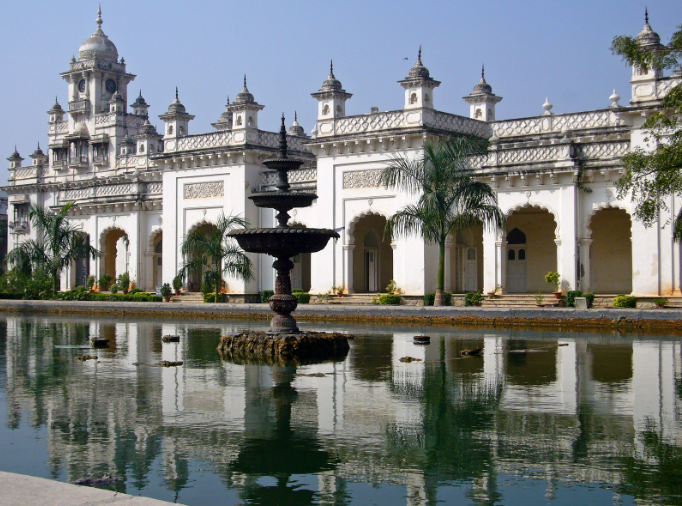
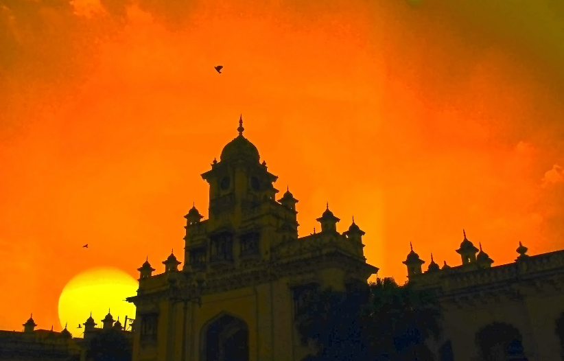

Chowmahalla Palace or Chowmahallat is the palace of the Nizams of Hyderabad State located in Hyderabad, Telangana, India.
It was the seat of power of the Asaf Jahi dynasty (1720-1948) and was the official residence of the Nizams of Hyderabad
during their reign. Presently the palace is converted into a museum but the ownership still lies with the family.
The palaces is constructed at the location of an earlier existing palaces of the Qutb Shahi Dynasty and Asaf Jahi Dynasty
close to the Charminar. Construction of the palace as it stands today was started by Nizam Ali Khan Asaf Jah II in 1769.
He ordered to build four palace from which the nomenclature of Chau Mahalla was acquired. The word chār or chahār, and
its variation chow, means "four" and the word mahal means "palace" in Urdu, Hindi and Persian.

The history of Hyderabad is so enticing that it feels like reading a wonderful love story and its glorious past is no less
than a fairy tale. And the most interesting part of this novel forms the rule of the Nizams, which fills pages of history
with legendary contributions of art, architecture and science.
A testimony to this aspect is seen in the form of the many exquisite monuments scattered all over the city. One such
monument that in its striking sumptuousness still shows off the power of time immemorial is the engrossing Chowmahalla
Palace. The name Chowmahalla refers to four palaces. The construction of the palace was initiated in the year 1750 by
Nizam Salabhat Jung but it was Nizam Afzar-ud-Dawla Bahadur who saw that the palace was completed between the years 1857
and 1869. Originally, the palace covered 45 acres from Laad Bazaar on the north to Aspan Chowk Road which is on the south.
The Chowmohalla complex is a replica of Shah’s Palace in Teheran, Iran. Presently the palace consists of two courtyards
with graceful palaces, the grand Durbar Hall or the Khilwat. Gardens and fountains add to the elegance.
Southern Courtyard is the oldest part of the complex. It comprises of four graceful palaces Tahniyat Mahal, Mahtab Mahal,
Afzal Mahal, and Aftab Mahal. Northern Courtyard has been restored and is open to the public. The main attraction of this
area is the Bara Imam, which is a long corridor. It has rooms on the east wing, which once served as the administrative
wing. Another stunning construction is the Clock Tower. It houses the Khilwat Clock which still works perfectly.
